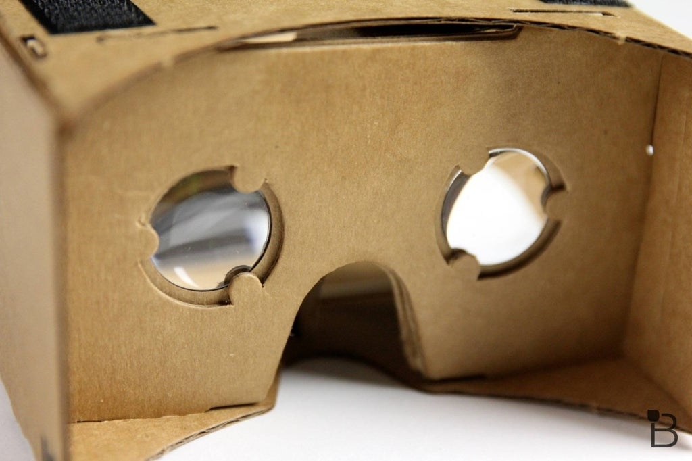
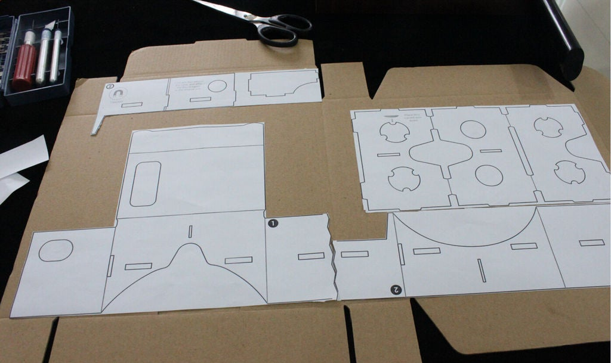
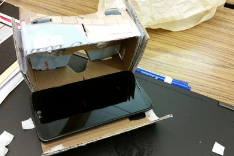
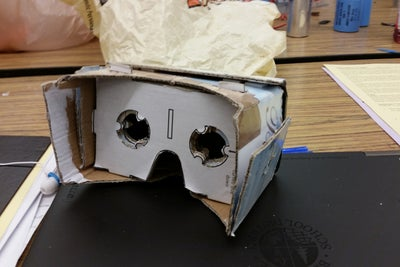

DIY Virtual Reality Glasses
Materials needed:
Cardboard Shoe Box
Scissors and/or Xacto Knife
2 45 mm Biconvex Lenses
4 strips of Velcro
Gluestick
Making VR Goggles

First, print out the template from the pdf file below.
VR Goggles Template
Second, use the scissors and the Xacto knife to cut out the templates after placing the template over the cardboard.
Remember to layout the cutouts and line up the edges, using glue/velcro/other connective material to secure the goggles.

Make sure mobile device can be secure, do not use glue to attach the device.

Download a VR application from your mobile device's app store.
Have fun!

[Home]
[Jaxon's]
[DIY computer]
[Smartphone Projector]
[Laptop Display to External Monitor]